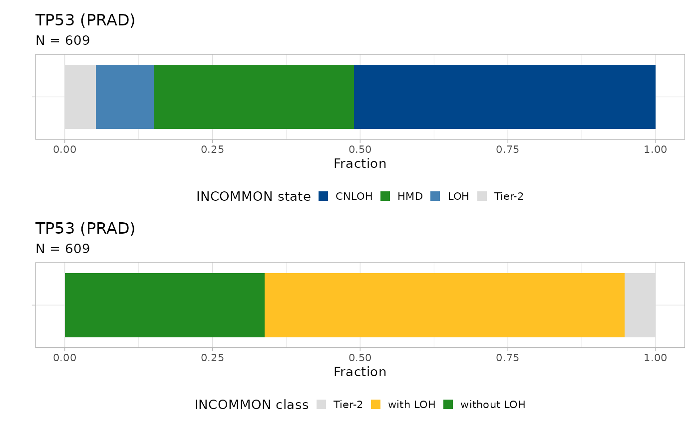

library(INCOMMON)
#> Warning: replacing previous import 'cli::num_ansi_colors' by
#> 'crayon::num_ansi_colors' when loading 'INCOMMON'
library(dplyr)
#>
#> Attaching package: 'dplyr'
#> The following objects are masked from 'package:stats':
#>
#> filter, lag
#> The following objects are masked from 'package:base':
#>
#> intersect, setdiff, setequal, unionDownstream of classification, INCOMMON can interpret the mutant genome in terms of heterozygous mutant diploid (HMD) genes, completely inactivated tumor suppressor genes (TSG), completely activated oncogenes and Tier-2 mutations (uncertain/hard to interpret mutations).
Full inactivation of tumor suppressor genes (TSG) is detected as mutations with loss of the wild-type (WT) allele, either through pure loss of heterozygosity (LOH) or with copy-neutral LOH (CNLOH). Full activation of oncogenes is identified as mutations with amplification of the mutant allele. In addition to amplifications in trisomy and tetrasomy (AM), CNLOH events are interpreted for oncogenes as amplifications in disomy, since the mutant allele is found in double copy.
3.1 Genome interpretation of 1880 prostate adenocarcinoma samples
3.1.1 INCOMMON classification
First, we classify samples of prostate adenocarcinoma (PRAD). As a first step, we select samples of this type from the MSK-MetTropsim dataset:
data(MSK_genomic_data)
data(MSK_clinical_data)
data(cancer_gene_census)
x = init(
genomic_data = MSK_genomic_data,
clinical_data = MSK_clinical_data %>% filter(tumor_type == 'PRAD'),
gene_roles = cancer_gene_census
)
#> ── INCOMMON - Inference of copy number and mutation multiplicity in oncology ───
#>
#> ── Genomic data ──
#>
#> ✔ Found 25659 samples, with 224939 mutations in 491 genes
#> ! No read counts found for 1393 mutations in 1393 samples
#> ! Gene name not provided for 1393 mutations
#> ! 201 genes could not be assigned a role (TSG or oncogene)
#>
#> ── Clinical data ──
#>
#> ℹ Provided clinical features:
#> ✔ sample (required for classification)
#> ✔ purity (required for classification)
#> ✔ tumor_type
#> ✔ OS_MONTHS
#> ✔ OS_STATUS
#> ✔ SAMPLE_TYPE
#> ✔ MET_COUNT
#> ✔ METASTATIC_SITE
#> ✔ MET_SITE_COUNT
#> ✔ PRIMARY_SITE
#> ✔ SUBTYPE_ABBREVIATION
#> ✔ GENE_PANEL
#> ✔ SEX
#> ✔ TMB_NONSYNONYMOUS
#> ✔ FGA
#> ✔ AGE_AT_SEQUENCING
#> ✔ RACE
#> ✔ Found 2158 matching samples
#> ✖ Found 23507 unmatched samples
print(x)
#> ── [ INCOMMON ] 7194 PASS mutations across 1880 samples, with 287 mutant genes
#> ℹ Average sample purity: 0.4
#> ℹ Average sequencing depth: 613
#> # A tibble: 7,194 × 27
#> sample tumor_type purity chr from to ref alt DP NV VAF
#> <chr> <chr> <dbl> <chr> <dbl> <dbl> <chr> <chr> <int> <int> <dbl>
#> 1 P-00314… PRAD 0.1 chr3 1.89e8 1.89e8 A G 527 57 0.108
#> 2 P-00369… PRAD 0.5 chr17 4.77e7 4.77e7 A C 580 144 0.248
#> 3 P-00369… PRAD 0.5 chr22 4.15e7 4.15e7 G T 363 94 0.259
#> 4 P-00446… PRAD 0.9 chr17 7.58e6 7.58e6 C A 397 336 0.846
#> 5 P-00446… PRAD 0.9 chr2 4.77e7 4.77e7 AAG - 317 123 0.388
#> 6 P-00446… PRAD 0.9 chr4 1.88e8 1.88e8 G A 351 19 0.0541
#> 7 P-00420… PRAD 0.4 chr8 1.29e8 1.29e8 G C 819 162 0.198
#> 8 P-00420… PRAD 0.4 chr2 1.98e8 1.98e8 C A 454 27 0.0595
#> 9 P-00436… PRAD 0.6 chr10 8.97e7 8.97e7 T G 265 65 0.245
#> 10 P-00438… PRAD 0.4 chr3 4.13e7 4.13e7 G T 476 53 0.111
#> # ℹ 7,184 more rows
#> # ℹ 16 more variables: gene <chr>, gene_role <chr>, OS_MONTHS <dbl>,
#> # OS_STATUS <dbl>, SAMPLE_TYPE <chr>, MET_COUNT <dbl>, METASTATIC_SITE <chr>,
#> # MET_SITE_COUNT <dbl>, PRIMARY_SITE <chr>, SUBTYPE_ABBREVIATION <chr>,
#> # GENE_PANEL <chr>, SEX <chr>, TMB_NONSYNONYMOUS <dbl>, FGA <dbl>,
#> # AGE_AT_SEQUENCING <dbl>, RACE <chr>We can classify 7194 mutations across 1880 samples. The quality of these data is quite good, with average purity 0.41 and average sequencing depth 613.
x = classify(
x = x,
priors = INCOMMON::pcawg_priors,
entropy_cutoff = NULL,
rho = 0.01
# parallel = TRUE, # uncomment these to run in parallel
# num_cores = 8
)
print(x)
#> ── [ INCOMMON ] 7194 PASS mutations across 1880 samples, with 287 mutant genes
#> ℹ Average sample purity: 0.4
#> ℹ Average sequencing depth: 613
#> ── [ INCOMMON ] Classified mutations with overdispersion parameter 0.01 and ent
#> ℹ There are:
#> • N = 3571 mutations (HMD)
#> • N = 387 mutations (LOH)
#> • N = 1346 mutations (CNLOH)
#> • N = 696 mutations (AM)
#> • N = 1194 mutations (Tier-2)
#> # A tibble: 7,194 × 18
#> sample tumor_type purity chr from to ref alt DP NV VAF
#> <chr> <chr> <dbl> <chr> <dbl> <dbl> <chr> <chr> <int> <int> <dbl>
#> 1 P-00314… PRAD 0.1 chr3 1.89e8 1.89e8 A G 527 57 0.108
#> 2 P-00369… PRAD 0.5 chr17 4.77e7 4.77e7 A C 580 144 0.248
#> 3 P-00369… PRAD 0.5 chr22 4.15e7 4.15e7 G T 363 94 0.259
#> 4 P-00446… PRAD 0.9 chr17 7.58e6 7.58e6 C A 397 336 0.846
#> 5 P-00446… PRAD 0.9 chr2 4.77e7 4.77e7 AAG - 317 123 0.388
#> 6 P-00446… PRAD 0.9 chr4 1.88e8 1.88e8 G A 351 19 0.0541
#> 7 P-00420… PRAD 0.4 chr8 1.29e8 1.29e8 G C 819 162 0.198
#> 8 P-00420… PRAD 0.4 chr2 1.98e8 1.98e8 C A 454 27 0.0595
#> 9 P-00436… PRAD 0.6 chr10 8.97e7 8.97e7 T G 265 65 0.245
#> 10 P-00438… PRAD 0.4 chr3 4.13e7 4.13e7 G T 476 53 0.111
#> # ℹ 7,184 more rows
#> # ℹ 7 more variables: gene <chr>, gene_role <chr>, id <chr>, label <chr>,
#> # state <chr>, posterior <dbl>, entropy <dbl>There are 3571 heterozygous diploid mutations (HMD), 387 mutations with loss of heterozygosity (LOH), 1346 mutations with copy-neutral LOH (CNLOH), 696 mutations with amplification. In addition, 1194 mutations were classified as Tier-2, either because of entropy being larger than the cutoff or because of a low number of mutant alleles relative to the WT.
3.1.2 Genome Interpreter
The function genome_interpreter adds two variables to
the classification object: the class,
indicating for each mutant gene whether it is with LOH or amplification,
depending on the gene role. In addition, each sample is annotated with a
genotype that summarises all the interpreted mutation found
in the sample.
x = genome_interpreter(x = x)
#> ℹ There are 1522 different genotypes
#> ℹ The most abundant genotypes are:
#> • Mutant TP53 with LOH (58 Samples, Frequency 0.03)
#> • Mutant TP53 without LOH (43 Samples, Frequency 0.02)
#> • Mutant SPOP without LOH (31 Samples, Frequency 0.02)Across the PRAD samples that we classified, there are 1525 different genotypes, the most abundant ones being full inactivation of TP53 (‘Mutant TP53 with LOH’), partial inactivation of TP53 (‘Mutant TP53 without LOH’) and mutations of the TSG SPOP without LOH. Notice that these alterations can be found in other genotypes, combined with mutations in other genes.
3.1.3 Visulasing the distribution of INCOMMON classes
We can visualise the distribution of INCOMMON classes for a specific
gene and tumour type using the function
plot_class_fraction.
Here, we have classified prostate adenocarcinoma samples, so we set
the tumor_type to PRAD and we can look at the distribution
of INCOMMON states and interpreted classes for different genes.
For instance, TP53 that characterizes the most abundant genotypes:
plot_class_fraction(x = x, tumor_type = 'PRAD', gene = 'TP53')
#> ℹ The frequency of states CNLOH, HMD, LOH, and Tier-2 are 0.51, 0.34, 0.1, and 0.05
There is high incidence (61%) of mutations with LOH in 609 mutant TP53 samples, the majority of which (51%) being copy-neutral (CNLOH). TP53 mutations without LOH represent 34% of the total, with a small fraction (9.8%) being Tier-2 mutations.
We can also look at SPOP:
plot_class_fraction(x = x, tumor_type = 'PRAD', gene = 'SPOP')
#> ℹ The frequency of states AM, CNLOH, HMD, LOH, and Tier-2 are 0.01, 0.17, 0.67, 0.04, and 0.11Across 285 samples, the majority (57%) of SPOP mutations are without LOH, whereas a smaller fraction (20%) is combined with LOH, with 17% being CNLOH. The fraction of Tier-2 mutations (21%) for this gene is much higher than TP53.
For oncogenes, in addition to mutations with amplification in trisomy/tetrasomy (AM), mutations with CNLOH are interpreted as amplifications in disomy, since the mutant allele is present in double copy.
Let’s take a look at KRAS:
plot_class_fraction(x = x, tumor_type = 'PRAD', gene = 'KRAS')
#> ℹ The frequency of states AM, CNLOH, HMD, and Tier-2 are 0.21, 0.05, 0.53, and 0.21The majority of mutations with amplifications (26% across 19 samples) consist of double mutant alleles in a trisomy or tetrasomy context (21%) plus a 5% of cases with disomy. A significant fraction (21%) of mutations are Tier-2, whereas 53% of mutations are in a heterozygous diploid context.